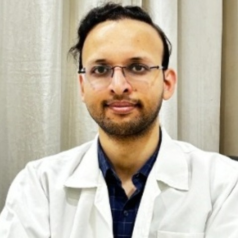

Endoscopy & colonoscopyਐਂਡੋਸਕੋਪੀ ਤੇ ਕੋਲਨੋਸਕੋਪੀ
Upper GI endoscopy and colonoscopy for acidity, bleeding, ulcers, polyps and unexplained symptoms.ਪੇਟ ਦੀ ਦੂਰਬੀਨ ਜਾਂਚ।
EnquireਪੁੱਛੋUnderstand digestive symptoms, liver reports and treatment options with specialist care at NHS Hospital, Jalandhar.ਪੇਟ ਦੀ ਤਕਲੀਫ਼, ਜਿਗਰ ਦੀਆਂ ਰਿਪੋਰਟਾਂ ਅਤੇ ਇਲਾਜ ਲਈ NHS ਹਸਪਤਾਲ, ਜਲੰਧਰ ਵਿੱਚ ਮਾਹਿਰ ਨਾਲ ਗੱਲ ਕਰੋ।
Understand your symptoms and reports with a specialist.ਮਾਹਿਰ ਨਾਲ ਲੱਛਣਾਂ ਅਤੇ ਰਿਪੋਰਟਾਂ ਬਾਰੇ ਗੱਲ ਕਰੋ।
Endoscopy, scans and further evaluation when indicated.ਲੋੜ ਅਨੁਸਾਰ ਐਂਡੋਸਕੋਪੀ, ਸਕੈਨ ਅਤੇ ਹੋਰ ਜਾਂਚ।
Care planned around your condition and individual needs.ਤੁਹਾਡੀ ਸਿਹਤ ਅਤੇ ਲੋੜ ਅਨੁਸਾਰ ਇਲਾਜ।
Follow-up and practical guidance for your long-term health.ਤੁਹਾਡੀ ਸਿਹਤ ਲਈ ਫਾਲੋ-ਅੱਪ ਅਤੇ ਸਲਾਹ।
Personal attention, a clear plan, and specialist support for every step of your care.ਤੁਹਾਡੀ ਦੇਖਭਾਲ ਲਈ ਖ਼ਾਸ ਧਿਆਨ, ਸਪੱਸ਼ਟ ਯੋਜਨਾ ਅਤੇ ਮਾਹਿਰ ਦੀ ਸਲਾਹ।

Consultant Gastroenterologist — therapeutic endoscopy, liver diseaseਪੇਟ ਤੇ ਜਿਗਰ ਰੋਗਾਂ ਦੇ ਮਾਹਿਰ
Request an appointmentਮੁਲਾਕਾਤ ਲਈ ਬਿਨਤੀUpper GI endoscopy and colonoscopy for acidity, bleeding, ulcers, polyps and unexplained symptoms.ਪੇਟ ਦੀ ਦੂਰਬੀਨ ਜਾਂਚ।
EnquireਪੁੱਛੋA painless scan that measures liver stiffness and fat — no needle, result the same day.ਬਿਨਾਂ ਦਰਦ ਸਕੈਨ।
EnquireਪੁੱਛੋEndoscopic treatment of bile duct stones, blockages and strictures.ਪਿੱਤ ਦੀ ਨਾਲੀ ਦਾ ਦੂਰਬੀਨ ਇਲਾਜ।
EnquireਪੁੱਛੋFatty liver and NASH, hepatitis, cirrhosis and jaundice, followed up with imaging and blood work on site.ਚਰਬੀ ਵਾਲਾ ਜਿਗਰ, ਹੈਪੇਟਾਈਟਸ।
EnquireਪੁੱਛੋPiles, fissure, fistula and pilonidal sinus treated with laser techniques in suitable cases.ਢੁਕਵੇਂ ਕੇਸਾਂ ਵਿੱਚ ਲੇਜ਼ਰ ਇਲਾਜ।
EnquireਪੁੱਛੋGastric balloon and medically supervised weight management, with dietetics in the same building.ਗੈਸਟ੍ਰਿਕ ਬੈਲੂਨ ਤੇ ਭਾਰ ਘਟਾਉਣਾ।
EnquireਪੁੱਛੋLeads the digestive sciences service: diagnostic and therapeutic endoscopy, ERCP, endoscopic ultrasound, and the management of fatty liver, hepatitis, cirrhosis and pancreatitis.ਪਾਚਣ ਵਿਭਾਗ ਦੀ ਅਗਵਾਈ।
Talk to our care team: 0181-4633333ਸਾਡੀ ਟੀਮ ਨਾਲ ਗੱਲ ਕਰੋ: 0181-4633333
Book a consultationਸਲਾਹ ਲਈ ਬਿਨਤੀFrom your first consultation to specialist treatment, get to know the spaces and people behind your care.ਜਲੰਧਰ ਵਿੱਚ ਸਾਡੇ ਹਸਪਤਾਲ ਦੀਆਂ ਅਸਲ ਤਸਵੀਰਾਂ ਵੇਖੋ।


Leave your details and our appointment team will call you during OPD hours to help arrange your visit.ਆਪਣੇ ਵੇਰਵੇ ਭੇਜੋ। ਸਾਡੀ ਟੀਮ OPD ਦੇ ਸਮੇਂ ਫ਼ੋਨ ਕਰਕੇ ਮੁਲਾਕਾਤ ਵਿੱਚ ਮਦਦ ਕਰੇਗੀ।
Prefer to call?ਫ਼ੋਨ ਕਰਨਾ ਚਾਹੁੰਦੇ ਹੋ?0181-4633333Qualifications and registration details are available at the desk on request.ਡਿਗਰੀਆਂ ਦੀ ਜਾਣਕਾਰੀ ਕਾਊਂਟਰ ਤੋਂ।
Near Sports College, 300 m from Kapurthala Chowk, Jalandhar, Punjab 144001ਸਪੋਰਟਸ ਕਾਲਜ ਦੇ ਨੇੜੇ, ਕਪੂਰਥਲਾ ਚੌਕ ਤੋਂ 300 ਮੀਟਰ, ਜਲੰਧਰ, ਪੰਜਾਬ 144001
Our appointment team will contact you during OPD hours to discuss your concern and available appointments. Your visit is confirmed by the team.ਸਾਡੀ ਟੀਮ OPD ਸਮੇਂ ਸੰਪਰਕ ਕਰੇਗੀ ਅਤੇ ਮੁਲਾਕਾਤ ਦੀ ਪੁਸ਼ਟੀ ਕਰੇਗੀ।
Yes. Bring your previous reports, scans and current prescriptions so your specialist can review your history.ਹਾਂ। ਆਪਣੀਆਂ ਪੁਰਾਣੀਆਂ ਰਿਪੋਰਟਾਂ, ਸਕੈਨ ਅਤੇ ਦਵਾਈਆਂ ਦੀ ਸੂਚੀ ਨਾਲ ਲਿਆਓ।
Call our desk before your visit. The team can help you check your insurer or scheme and the documents needed. Coverage is subject to approval.ਮੁਲਾਕਾਤ ਤੋਂ ਪਹਿਲਾਂ ਸਾਡੇ ਕਾਊਂਟਰ ਨੂੰ ਫ਼ੋਨ ਕਰੋ। ਬੀਮੇ ਦੀ ਮਨਜ਼ੂਰੀ ਅਤੇ ਲੋੜੀਂਦੇ ਦਸਤਾਵੇਜ਼ਾਂ ਬਾਰੇ ਪੁੱਛੋ।
Call 0181-4707700 or go to your nearest emergency department. Please do not wait for a callback for an emergency.0181-4707700 ਉੱਤੇ ਫ਼ੋਨ ਕਰੋ ਜਾਂ ਨੇੜੇ ਦੇ ਐਮਰਜੈਂਸੀ ਵਿਭਾਗ ਜਾਓ। ਕਾਲ ਦੀ ਉਡੀਕ ਨਾ ਕਰੋ।
Need urgent care?ਤੁਰੰਤ ਮਦਦ ਚਾਹੀਦੀ ਹੈ? For a medical emergency, call our emergency desk or visit your nearest emergency department.ਐਮਰਜੈਂਸੀ ਲਈ ਸਾਡੇ ਕਾਊਂਟਰ ਨੂੰ ਫ਼ੋਨ ਕਰੋ ਜਾਂ ਨੇੜੇ ਦੇ ਐਮਰਜੈਂਸੀ ਵਿਭਾਗ ਜਾਓ।
0181-4707700